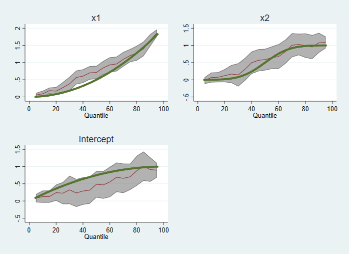

Conditional Quantile Regressions: A simulation approach
First apologies. I have been working on the third part of my Qreg interpretation "blog", but has been taking longer than expected, as I'm struggling to find a balance between length, technical details, and what is more important (and motivated me to write that), the interpretation. But, I have not forgotten about that. It is coming.
Now something I realized while writing about Conditional quantile regression, is that we (or at least when I learned this topic), fail to understand what conditional quantile regressions do because it is hard to think about how data looks like in terms of the Data generating process (DGP).
So, to help address this problem, I will provide you here two ways of thinking about what Conditional quantile regressions do, from the perspective of the underlying DGP. So let's start.
Conditional Quantile regressions: A tale of unobserved heterogeneity
As the title suggests, one of the ways of thinking about DGP and what conditional quantile regressions do is to think in terms of unobserved heterogeneity. Something, that we cannot control for that is interacting with the effect of observed variables, which can the effect of those variables vary across individuals.
On this regard, while unobserved factors that cause the heterogeneity cannot be observed, CQR tries to identify this heterogeneity by imposing some identification assumptions that relate to conditional distributions, but not necessarily individual experiences.
Namely, consider the conditional distribution of Y that can be written as $F_{Y|X}$. Given this function, it is also possible to identify the conditional quantile as $F^{-1}_{y|x}(\tau)=Q_{y|X}(\tau)$.
The first identification assumption for conditional quantiles (whichever method you choose to apply) is that:
$$ Q_{y|X}(\tau_1) \leq Q_{y|X}(\tau_2) \iff \tau_1 \leq \tau_2 $$
In other words, conditional quantiles have to be non decreasing in $\tau$. This is an obvious condition, but it does impose important constrains on the on how estimators attempt to identify conditional quantiles.
Specifically, Assume that conditional quantiles can be estimated using some functional form as follows:
$$ Q_{y|X}(\tau) = g(X,\tau) $$
Under very specific circumstances, if we know an observations $x_i$ and $\tau_i$ (which is a stand-in for the unobserved component), we will have the following:
$$ y_i = g(X_i,\tau_i) = Q_{y|X=x_i}(\tau_i) $$
This means that we could use the same function $g()$ to determine a conditional quantile and the outcome for any particular observation.
And if this is true, that means the "rank invariance" assumption holds. And we could analyze how $y$ when either $x$ changes if $\tau_i$ remains the same, or $\tau$ changes assuming $x$ remains the same.
So where is the heterogeneity?
As I already mention, all conditional quantile regression methods attempt to identify the function $g(X,\tau)$. To do so, most impose some functional form on $g()$ that would help to identify relationships across all observations who have the same "ranking" $\tau$ but different $X$. The opposite, identifying all quantiles $\tau$ across observations with the same $X$ is also possible, but require may work, depending on the dimension of $X$.
The most common approach, which I'll use for the data simulation, is to assume that, for a fixed $\tau$, the function $g()$ is linear in $X$:
$$ Q_{y|X}(\tau) = g(X,\tau) = X*\beta(\tau)$$
In this setup, the unobserved heterogeneity comes from $\beta(\tau)$ , because we never really know what quantile $\tau$ a person belongs to, the same way that we never observe the true error in a standard LR model. Additionally, quantile regression algorithms will find $\betas(\tau)$ that may generate "reasonable" quantiles, but you may also observe quantile crossings where predicted 90th quantile may have a value below than 10th quantile, for combinations of characteristics that are rare or unobserved in the actual data.
DGP for conditional quantile regressions
There are two DGP that have been considered and used for explaining what do CQR does. The first approach is the one I have previously described:
$$y_i=x_i*\beta(\tau_i) \quad \tau_i \sim uniform(0,1) $$
This specification basically assumes a kind of random coefficients models that depend on $\tau$, which follows a uniform distribution (0,1). To simplify things, one usually assumes $\beta(\tau_i)$ to be some linear or nonlinear function of $\tau$.
The second DGP that has been used, and is often more intuitive, is to assume a model with known heteroskedasticity:
$$y_i=g(x)+v_i *h(x) \quad v_i \sim iid \quad or $$
$$y_i=x_i*\beta+v_i *(x_i*\gamma) \quad v_i \sim iid $$
This second approach, however, is a special case of the first one, if we assume that $v_i = F^-1_v(\tau_i)$:
$$y_i=x_i*(\beta+v_i *\gamma) = x_i*(\beta+F_v^-1(\tau) *\gamma) = x_i*\beta(\tau_i)$$
Now, if we want to use this DGP process to simulate data, and verify that any particular algorithm (like -qreg-) replicates the "theoretical" quantile beta coefficients $\beta(\tau)$, we need to remember that the first assumption I started with holds:
$$ Q_{y|X}(\tau_1) \leq Q_{y|X}(\tau_2) \iff \tau_1 \leq \tau_2$$
As far as I know, in the case of the random coefficients approach, no general conditions exist to garrantie monotonically increasing conditional quantiles. However, for the heteroskedastic error approach, one simply needs $h(x)$ to be strictly possitive.
Alright, so with this in mind, some coding.
. ** General set up
. ** Generating 1000 obs
. clear
. set obs 1000
number of observations (_N) was 0, now 1,000
. set seed 1
. ** and generating TAU
. gen tau = runiform()
. gen tau100=tau*100
. ** I create X1 and X2 to be strictly possitive correlated variables.
. gen corr_factor=rnormal()
. gen x1=ceil( 3*normal((0.4*rnormal()+0.6*corr_factor)) *10)/10
. gen x2=ceil( abs( 0.4*rnormal()+0.6*corr_factor) *10)/10
. ** For Option 1, I will take the random coefficients aproach.
. ** Where the betas are functions of tau
. gen b0 = tau*2-tau^2
. gen b1 = 2*tau^2
. gen b2 = normal((tau-.5)*7)
. ** The outcome is then the randome coefficients times the characteristics
. gen y_1 = b0 + b1 *x1 +b2*x2
. reg y_1 x1 x2
Source | SS df MS Number of obs = 1,000
-------------+---------------------------------- F(2, 997) = 81.76
Model | 344.698238 2 172.349119 Prob > F = 0.0000
Residual | 2101.67094 997 2.10799492 R-squared = 0.1409
-------------+---------------------------------- Adj R-squared = 0.1392
Total | 2446.36918 999 2.448818 Root MSE = 1.4519
------------------------------------------------------------------------------
y_1 | Coef. Std. Err. t P>|t| [95% Conf. Interval]
-------------+----------------------------------------------------------------
x1 | .7799979 .0646359 12.07 0.000 .6531599 .9068359
x2 | .4916657 .1062022 4.63 0.000 .2832603 .7000712
_cons | .5588526 .130174 4.29 0.000 .3034061 .8142992
------------------------------------------------------------------------------
. ** for Option 2, I will use a model with with heteroskedasticity
. ** first the iid error (with mean 0) (here normal)
. gen v = invnormal(tau)
.
. ** and the model with heteroskedasticity could be:
. * y_2 = 0.5 + 0.5 * x1 + 0.5 * x2 + v*(2 - 0.2* x1 + x2)
. ** THis implies the following Betas:
. gen g0 = 0.5 + 2* invnormal(tau)
. gen g1 = 0.5 -.2* invnormal(tau)
. gen g2 = 0.5 + 1* invnormal(tau)
. ** so the data can be created like this:
. * gen y_21= 0.5 + 0.5 * x1 + 0.5 * x2 + v*(2 - 0.2* x1 + x2)
. ** or like this:
. gen y_2 = g0 + g1*x1+g2*x2
So here you have two different examples of how to generate quantile regressions.
Now to see how well these coefficients can be identified using -qreg-, we can estimate series of CQR, and compared the coefficients with the True coefficients.
Here an example:
. ** Model with random coefficients
. qui:qreg y_1 x1 x2, nolog
. qregplot x1 x2, cons raopt( color(gs4%50)) q(5(5)95)
. addplot 1:line b1 tau100 if inrange(tau100,4,96), sort lwidth(1)
. addplot 2:line b2 tau100 if inrange(tau100,4,96), sort lwidth(1)
. addplot 3:line b0 tau100 if inrange(tau100,4,96), sort lwidth(1)
. graph export qdgp1.png, replace
(file qdgp1.png written in PNG format)

. ** Model with Heteroskedastic errors
. qui:qreg y_2 x1 x2, nolog
. qregplot x1 x2, cons raopt( color(gs4%50)) q(5(5)95)
. addplot 1:line g1 tau100 if inrange(tau100,4,96), sort lwidth(1)
. addplot 2:line g2 tau100 if inrange(tau100,4,96), sort lwidth(1)
. addplot 3:line g0 tau100 if inrange(tau100,4,96), sort lwidth(1)
. graph export qdgp2.png, replace
(file qdgp2.png written in PNG format)
Of course, a simple 1 shot exercise is not enough to judge how qreg replicates DGP coefficients (or if the DGP coefficients as created correspond to the qreg coefficients). So to do this, I can just prepare a small Montecarlo simulation exercise. First for the random coefficients
. ** Create data:
. clear
. set obs 1000
number of observations (_N) was 0, now 1,000
. set seed 1
. gen tau = runiform()
. gen corr_factor=rnormal()
. gen x1=ceil( 3*normal((0.4*rnormal()+0.6*corr_factor)) *10)/10
. gen x2=ceil( abs( 0.4*rnormal()+0.6*corr_factor) *10)/10
. gen b0=.
(1,000 missing values generated)
. gen b1=.
(1,000 missing values generated)
. gen b2=.
(1,000 missing values generated)
. gen y_1=.
(1,000 missing values generated)
. ** and simulate
. program sim_qreg1
1. replace tau = runiform()
2. replace b0 = tau*2-tau^2
3. replace b1 = 2*tau^2
4. replace b2 = normal((tau-.5)*7)
5. ** The outcome is then the randome coefficients times the characteristics
. replace y_1 = b0 + b1 *x1 +b2*x2
6. qreg y_1 x1 x2, q(10)
7. matrix b1=e(b)-[2*0.1^2, normal((0.1-.5)*7), 0.1*2-0.1^2]
8. qreg y_1 x1 x2, q(50)
9. matrix b2=e(b)-[2*0.5^2, normal((0.5-.5)*7), 0.5*2-0.5^2]
10. qreg y_1 x1 x2, q(90)
11. matrix b3=e(b)-[2*0.9^2, normal((0.9-.5)*7), 0.9*2-0.9^2]
12. matrix coleq b1 = q10
13. matrix coleq b2 = q50
14. matrix coleq b3 = q90
15. matrix colname b1 =b1 b2 b0
16. matrix colname b2 =b1 b2 b0
17. matrix colname b3 =b1 b2 b0
18. matrix b =b1,b2,b3
19. ereturn post b
20. end
. set seed 10
. simulate, reps(500):sim_qreg1
command: sim_qreg1
Simulations (500)
----+--- 1 ---+--- 2 ---+--- 3 ---+--- 4 ---+--- 5
.................................................. 50
.................................................. 100
.................................................. 150
.................................................. 200
.................................................. 250
.................................................. 300
.................................................. 350
.................................................. 400
.................................................. 450
.................................................. 500
. sum
Variable | Obs Mean Std. Dev. Min Max
-------------+---------------------------------------------------------
q10_b_b1 | 500 .0020959 .0314996 -.0944763 .0842208
q10_b_b2 | 500 .0026978 .0550713 -.15062 .1787767
q10_b_b0 | 500 -.0019955 .062238 -.193784 .2200285
q50_b_b1 | 500 .0041795 .1257314 -.3433639 .4478617
q50_b_b2 | 500 -.0049844 .2248479 -.6915638 .5949767
-------------+---------------------------------------------------------
q50_b_b0 | 500 -.0094913 .2190925 -.6788032 .7094005
q90_b_b1 | 500 .0016747 .0706185 -.2597727 .200851
q90_b_b2 | 500 -.0047536 .0953134 -.3292854 .2505159
q90_b_b0 | 500 -.0046887 .1150711 -.370228 .4183795
If everything works the way it's supposed to, the means should be close to zero. And that is what we see here. (although you may argue, they are small but not quite zero). Remember, one should normally use 10000 simulations, not 500 as I did here.
For completeness, we can do this again for the heteroscedastic model:
. clear
. set obs 1000
number of observations (_N) was 0, now 1,000
. set seed 1
. gen tau = runiform()
. gen corr_factor=rnormal()
. gen x1=ceil( 3*normal((0.4*rnormal()+0.6*corr_factor)) *10)/10
. gen x2=ceil( abs( 0.4*rnormal()+0.6*corr_factor) *10)/10
. gen g0=.
(1,000 missing values generated)
. gen g1=.
(1,000 missing values generated)
. gen g2=.
(1,000 missing values generated)
. gen y_2=.
(1,000 missing values generated)
. ** and simulate
. program sim_qreg2
1. replace tau = runiform()
2. replace g0 = 0.5 + 2* invnormal(tau)
3. replace g1 = 0.5 -.2* invnormal(tau)
4. replace g2 = 0.5 + 1* invnormal(tau)
5. ** The outcome is then the randome coefficients times the characteristics
. replace y_2 = g0 + g1 *x1 +g2*x2
6. qreg y_2 x1 x2, q(10)
7. matrix b1=e(b)-[ 0.5 -.2* invnormal(.1) , 0.5 + 1* invnormal(.1), 0.5 + 2* invnormal(.1)]
8. qreg y_2 x1 x2, q(50)
9. matrix b2=e(b)-[ 0.5 -.2* invnormal(.5) , 0.5 + 1* invnormal(.5), 0.5 + 2* invnormal(.5)]
10. qreg y_2 x1 x2, q(90)
11. matrix b3=e(b)-[ 0.5 -.2* invnormal(.9) , 0.5 + 1* invnormal(.9), 0.5 + 2* invnormal(.9)]
12. matrix coleq b1 = q10
13. matrix coleq b2 = q50
14. matrix coleq b3 = q90
15. matrix colname b1 =b1 b2 b0
16. matrix colname b2 =b1 b2 b0
17. matrix colname b3 =b1 b2 b0
18. matrix b =b1,b2,b3
19. ereturn post b
20. end
. set seed 10
. simulate, reps(500):sim_qreg2
command: sim_qreg2
Simulations (500)
----+--- 1 ---+--- 2 ---+--- 3 ---+--- 4 ---+--- 5
.................................................. 50
.................................................. 100
.................................................. 150
.................................................. 200
.................................................. 250
.................................................. 300
.................................................. 350
.................................................. 400
.................................................. 450
.................................................. 500
. sum
Variable | Obs Mean Std. Dev. Min Max
-------------+---------------------------------------------------------
q10_b_b1 | 500 .0075737 .1731368 -.4866515 .446491
q10_b_b2 | 500 -.0007046 .3432789 -1.213517 1.093244
q10_b_b0 | 500 -.0103895 .3511256 -1.052383 1.110389
q50_b_b1 | 500 .0064221 .1327437 -.3747905 .4203672
q50_b_b2 | 500 -.0055896 .2414599 -.8344932 .7398532
-------------+---------------------------------------------------------
q50_b_b0 | 500 -.013601 .2657093 -.9403573 .6856188
q90_b_b1 | 500 .0070179 .1801566 -.5743021 .5326937
q90_b_b2 | 500 -.0110105 .3558143 -1.035386 .9824824
q90_b_b0 | 500 -.0073229 .3626464 -1.048338 1.119514
And again, we can see that the mean of coefficients is very close to zero, which suggest that the theoretical coefficients do match the coefficients identified by -qreg-.
One thing that I have found useful for analyzing CQR, in terms of the DGP, is to see what happens when the rank invariance assumption does not hold. This is a kind of counter-example, that may help understand why CQR cannot always be interpreted as individual effects, but effects across distributions.
For this example, I will concentrate on a model with a single explanatory variable, and use the random coefficients approach:
. *** create 1000 obs
. clear
. set obs 1000
number of observations (_N) was 0, now 1,000
. set seed 10
. *** create x to be positive (similar to above)
. gen x = 3*runiform()
. *** create Tau
. gen tau = runiform()
. *** and create two random coefficients
. gen b0 = tau-.5
. gen b1 = .5-tau
. *** create the outcome
. gen y = b0 + b1* x
This isn't obvious, but for this model, the rank invariance assumption does not hold. This is easy to see, if we plot the data above, color coding for different levels of $\tau$.
. two scatter y x, color(%20) || ///
> scatter y x if abs(tau-.1)<.05 || ///
> scatter y x if abs(tau-.5)<.05 || ///
> scatter y x if abs(tau-.9)<.05, ///
> legend(order(2 "Tau ~ 0.1" 3 "Tau ~ 0.5" 4 "Tau ~ 0.9") cols(3))
. graph export qdgp3.png, replace
(file qdgp3.png written in PNG format)
So what we see here is that the rank invariance assumption holds, but only for $X<1$. When $X>1$, everything flips. Observations with a smaller $\tau$, have a larger $y$, and vice-versa. This implies that this DGP does create heterogeneity, but the $\beta 's$ cannot be identified by -qreg-.
A simple way to see this is to estimate CQR, and plot the predicted values for those models:
. qui:qreg y x , q(10)
. predict q10
(option xb assumed; fitted values)
. qui:qreg y x , q(50)
. predict q50
(option xb assumed; fitted values)
. qui:qreg y x , q(90)
. predict q90
(option xb assumed; fitted values)
. two scatter y x, color(%20) || ///
> scatter y x if abs(tau-.1)<.05, color(navy) || ///
> scatter y x if abs(tau-.5)<.05, color(maroon) || ///
> scatter y x if abs(tau-.9)<.05, color(forest_green) || ///
> line q10 q50 q90 x, sort lw(1 1 1) color( navy maroon forest_green) ///
> legend(order(2 "Tau ~ 0.1" 3 "Tau ~ 0.5" 4 "Tau ~ 0.9" ///
> 5 "q10hat" 6 "q50hat" 7 "q90hat" ) cols(3))
. graph export qdgp4.png, replace
(file qdgp4.png written in PNG format)
As you can see, qreg (and any other program) estimates coefficients so that higher predicted quantiles are always larger than lower quantiles (at least within the observed range of $x$).
In this case, the rank invariance assumption does not hold, and the model specification is incorrect. It would be better to describe effects as simply comparing conditional distributions. Also, a better approximation could be using a quadratic term or a simple spline:
. *ssc install f_able
. f_spline d=x, k(1)
. qui:qreg y x d2 , q(10)
. predict q10x
(option xb assumed; fitted values)
. qui:qreg y x d2 , q(50)
. predict q50x
(option xb assumed; fitted values)
. qui:qreg y x d2 , q(90)
. predict q90x
(option xb assumed; fitted values)
.
. two scatter y x, color(%20) || ///
> scatter y x if abs(tau-.1)<.05, color(navy) || ///
> scatter y x if abs(tau-.5)<.05, color(maroon) || ///
> scatter y x if abs(tau-.9)<.05, color(forest_green) || ///
> line q10x q50x q90x x, sort lw(1 1 1) color( navy maroon forest_green) ///
> legend(order(2 "Tau ~ 0.1" 3 "Tau ~ 0.5" 4 "Tau ~ 0.9" ///
> 5 "q10hat" 6 "q50hat" 7 "q90hat" ) cols(3))
. graph export qdgp5.png, replace
(file qdgp5.png written in PNG format)
However, the simple Qreg still provides the best linear approximation, to the average conditional quantile effect:
. qreg y x , q(10) nolog
.1 Quantile regression Number of obs = 1,000
Raw sum of deviations 55.68722 (about -.34313792)
Min sum of deviations 48.61814 Pseudo R2 = 0.1269
------------------------------------------------------------------------------
y | Coef. Std. Err. t P>|t| [95% Conf. Interval]
-------------+----------------------------------------------------------------
x | -.1634042 .0211613 -7.72 0.000 -.2049299 -.1218786
_cons | -.106545 .0371668 -2.87 0.004 -.1794791 -.0336109
------------------------------------------------------------------------------
. qui:qreg y x d2 , q(10)
. f_able d2, auto
This is an experimental feature in f_able
Using this option, you do not need to add nochain or numerical options in margins
All variables in -nlvar- have been declared
. margins, dydx(x)
Average marginal effects Number of obs = 1,000
Model VCE : IID
Expression : Linear prediction, predict()
dy/dx w.r.t. : x
------------------------------------------------------------------------------
| Delta-method
| dy/dx Std. Err. z P>|z| [95% Conf. Interval]
-------------+----------------------------------------------------------------
x | -.1585367 .0096202 -16.48 0.000 -.1773918 -.1396815
------------------------------------------------------------------------------
. qreg y x , q(90) nolog
.9 Quantile regression Number of obs = 1,000
Raw sum of deviations 57.53462 (about .36839858)
Min sum of deviations 49.29308 Pseudo R2 = 0.1432
------------------------------------------------------------------------------
y | Coef. Std. Err. t P>|t| [95% Conf. Interval]
-------------+----------------------------------------------------------------
x | .1680959 .019872 8.46 0.000 .1291002 .2070915
_cons | .1167802 .0349024 3.35 0.001 .0482897 .1852707
------------------------------------------------------------------------------
. qui:qreg y x d2 , q(90)
. f_able d2, auto
This is an experimental feature in f_able
Using this option, you do not need to add nochain or numerical options in margins
All variables in -nlvar- have been declared
. margins, dydx(x)
Average marginal effects Number of obs = 1,000
Model VCE : IID
Expression : Linear prediction, predict()
dy/dx w.r.t. : x
------------------------------------------------------------------------------
| Delta-method
| dy/dx Std. Err. z P>|z| [95% Conf. Interval]
-------------+----------------------------------------------------------------
x | .1488343 .0078141 19.05 0.000 .133519 .1641497
------------------------------------------------------------------------------
Conclusion
In this post, I provided you with some code that I hope you find helpful to simulate and better understand what kind of information CQR can identify, and understand the implications of the rank invariance assumption.
There is still the problem of How should one interpret these results.
Interpreting CQR is a problem on its own. I'm still writing part III on the interpretation of QREG models, which emphasizes some of the details I describe here. So, yes, that is still to come.
As always, thank you for reading. Comments or questions, welcome.
And if you want the code for the data above, you can find it Here